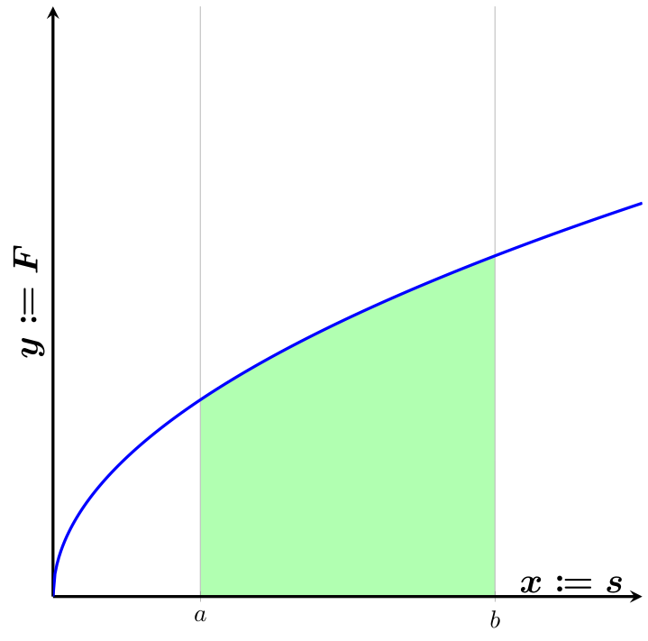
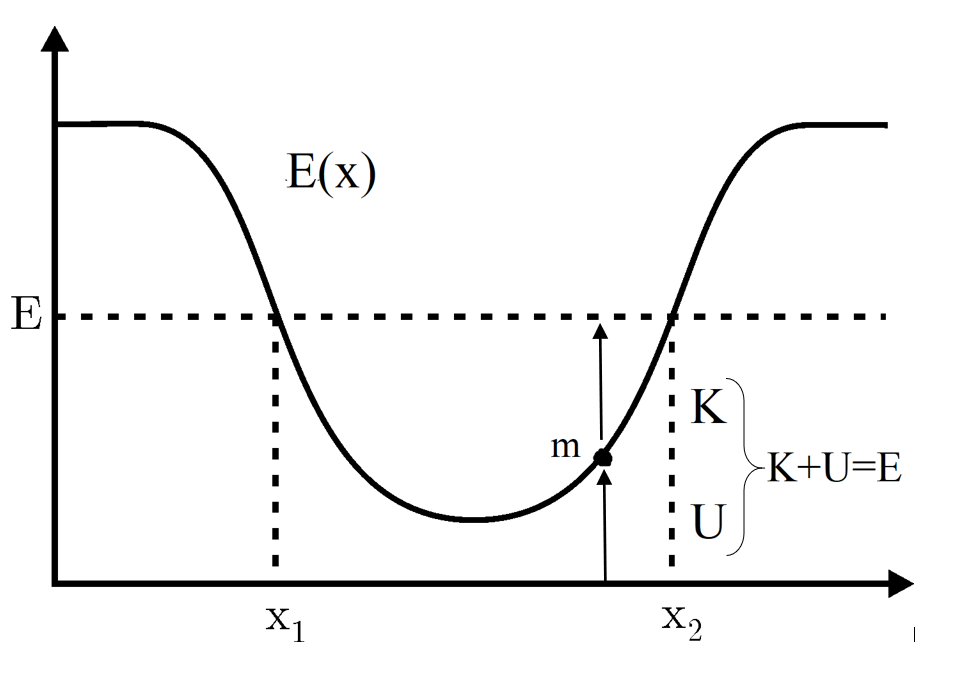
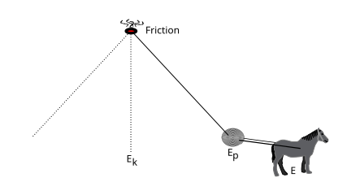
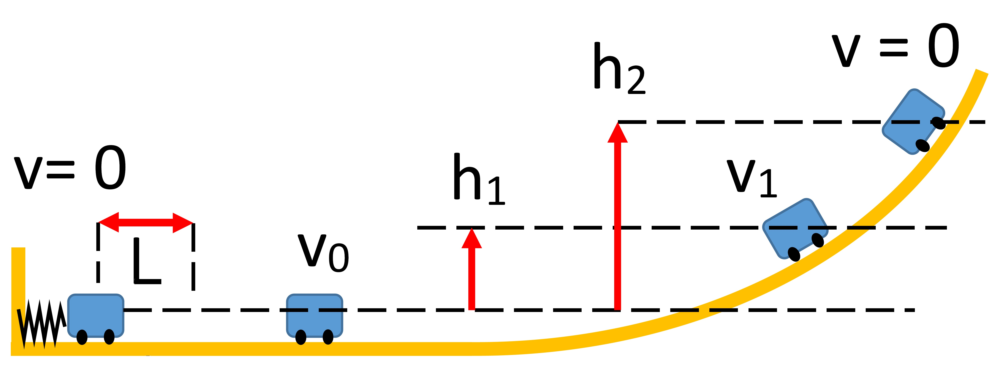
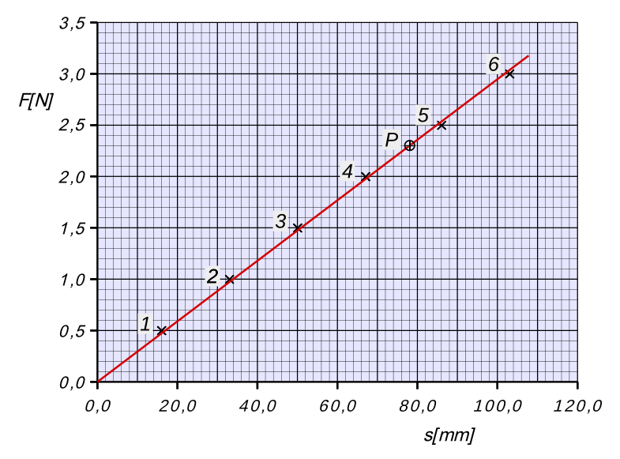

1. Peta materi
Materi ini memakai pendekatan yang berbeda dari materi Hukum Newton. Pada materi sebelumnya, gaya yang bekerja pada benda digunakan untuk menentukan percepatannya. Pada materi ini, pertanyaannya bergeser menjadi berapa kerja yang dilakukan gaya, berapa energi yang dimiliki benda, dan seberapa cepat energi tersebut dialirkan.
ALUR KONSEP
GAYA
|
| melakukan
v
USAHA (KERJA)
|
| berhubungan dengan
v
PERUBAHAN ENERGI KINETIK
|
| memiliki
v
ENERGI POTENSIAL
|
| digabung menjadi
v
ENERGI MEKANIK
|
| kekal bila
v
Kekekalan energi mekanik
|
| diukur dengan
v
DAYAHubungan terpenting yang perlu diingat sejak awal adalah perpindahan dari gaya menuju perubahan gerak melalui kerja.
GAYA -> KERJA -> PERUBAHAN ENERGI -> PERUBAHAN GERAK
Alternatif yang setara:
Sum F = m a (pendekatan Newton)
W net = delta E K (pendekatan energi)Kedua pendekatan tersebut tidak bertentangan. Hukum Newton menjelaskan perubahan gerak melalui gaya dan percepatan, sedangkan metode energi menjelaskan perubahan gerak melalui kerja dan energi.
2. Tujuan pembelajaran
Setelah mengikuti sesi ini, mahasiswa mampu menghitung kerja oleh gaya konstan dan gaya yang berubah, menganalisis tanda kerja, menerapkan teorema kerja dan energi, menghitung energi kinetik dan potensial, menjelaskan sifat gaya konservatif, serta menghitung daya.
| Tujuan | Indikator pemahaman |
|---|---|
| Menjelaskan pengertian usaha | Menghubungkan usaha dengan transfer energi akibat gaya dan perpindahan |
| Menghitung usaha gaya konstan | Menggunakan rumus W = F s cos theta dengan benar |
| Menentukan tanda usaha | Membedakan usaha positif, negatif, dan nol menurut sudut gaya |
| Memahami satuan joule | Menurunkan satuan joule dari satuan gaya dan perpindahan |
| Menghitung energi kinetik | Menggunakan rumus E K = satu per dua m v kuadrat |
| Menerapkan teorema kerja dan energi | Menghubungkan kerja netto dengan perubahan energi kinetik |
| Menghitung energi potensial | Menggunakan rumus E P = m g h dan titik acuan yang sesuai |
| Membedakan jenis gaya | Menjelaskan sifat konservatif dan non-konservatif serta akibatnya pada energi |
| Menerapkan kekekalan energi | Menyusun persamaan energi untuk gerak tanpa gesekan dan dengan gesekan |
| Menghitung daya | Menggunakan rumus P = W per t dan P = F v |
3. Kedudukan materi terhadap Hukum Newton
Pada materi sebelumnya, hubungan yang paling sering dipakai adalah:
Persamaan tersebut menjawab pertanyaan mengenai gaya, percepatan, gaya normal, tegangan tali, dan gesekan. Pada materi ini, pertanyaan yang dijawab berbeda. Kita menanyakan berapa kerja yang dilakukan gaya, berapa energi yang dimiliki benda, bagaimana energi berubah, dan seberapa cepat energi itu digunakan.
Pendekatan energi sering kali lebih singkat karena tidak memerlukan percepatan pada setiap titik lintasan. Pendekatan ini cukup langsung karena yang dibutuhkan hanyalah keadaan awal dan keadaan akhir.
4. Pengertian usaha
Dalam percakapan sehari-hari, kata kerja dipakai untuk berbagai aktivitas, misalnya bekerja selama delapan jam. Dalam fisika, istilah yang dipakai adalah usaha atau kerja, yang memiliki definisi khusus.
Kerja adalah transfer energi yang terjadi ketika gaya menyebabkan perpindahan benda.
| Besaran | Arti | Satuan |
|---|---|---|
| W | Kerja atau usaha | Joule |
| F | Besar gaya | Newton |
| s | Besar perpindahan | Meter |
| theta | Sudut antara gaya dan perpindahan | Derajat |
Kerja secara ilmiah hanya bergantung pada komponen gaya yang sejajar dengan perpindahan. Komponen gaya tegak lurus perpindahan tidak memberikan kontribusi apa pun.
5. Sudut antara gaya dan perpindahan
Keberadaan faktor cosinus pada rumus kerja memiliki alasan yang jelas.
F
/
/ theta
/
----/----------------->
A s B
Gaya F diuraikan menjadi:
sejajar perpindahan : F x = F cos theta
tegak lurus : F y = F sin theta
Yang bekerja hanya komponen sejajar:
W = F x x s
W = (F cos theta) x s
W = F s cos thetaSudut yang dipakai adalah sudut antara arah gaya dan arah perpindahan. Jika gaya arahnya sama dengan perpindahan, sudutnya nol sehingga cosinusnya satu dan kerja bernilai paling besar untuk besar gaya dan perpindahan yang tetap.
6. Tiga kondisi kerja
Dari rumus W = F s cos theta diperoleh tiga kondisi kerja yang perlu dibedakan dengan jelas.
| Sudut | Nilai cosinus | Tanda kerja | Contoh |
|---|---|---|---|
| 0 sampai 90 derajat | Positif | W lebih besar dari nol | Benda ditarik searah perpindahan |
| Lebih dari 90 sampai 180 derajat | Negatif | W kurang dari nol | Gaya gesek saat benda meluncur |
| Tepat 90 derajat | Nol | W sama dengan nol | Gaya angkat saat tas dibawa horizontal |
6.1 Kerja positif
Kerja positif terjadi ketika gaya memiliki komponen searah perpindahan. Gaya membantu gerakan sehingga energi benda bertambah.
F ->
[BENDA] ---> s
Sudut kecil, cosinus mendekati 1
W = F s cos theta bernilai positif
Contoh: menarik mobil yang sedang diam
mendorong tombol tekan6.2 Kerja negatif
Kerja negatif terjadi ketika gaya memiliki komponen berlawanan dengan perpindahan. Contoh paling mudah adalah gaya gesekan.
s ->
[BENDA]
f <-
Sudut mendekati 180 derajat,
cosinus bernilai negatif
W = F s cos theta bernilai negatif
Contoh: gesekan saat benda meluncur
gaya tekan pada pegasKerja negatif berarti gaya tersebut mentransfer energi keluar dari gerak benda dalam kerangka yang sedang dianalisis.
6.3 Kerja nol
Kerja nol terjadi ketika gaya tegak lurus perpindahan, sehingga cosinus sembilan puluh derajat bernilai nol.
F (ke atas)
|
[TAS] ---> s (horizontal)
Sudut 90 derajat
W = F s cos 90 = 0
Tas bergerak horizontal, tetapi gaya
tangan arahnya ke atas. Tegak lurus,
sehingga tidak ada kerja.
Contoh: membawa tas mendatar
dorongan pada dinding tegak lurus
gaya normal saat bola meluncur
di lantai licinKerja nol tidak berarti gaya nol. Gaya normal pada lantai bisa besarnya sangat besar, tetapi arahnya tegak lurus gerak horizontal benda sehingga kontribusinya nol.
7. Kerja dan kelelahan fisik
Definisi kerja dalam fisika berbeda dari makna kerja dalam kehidupan sehari-hari. Bayangkan seseorang menahan tas berat sambil berdiri diam.
Orang tersebut mungkin merasa sangat lelah. Namun terhadap tas, jika tas tidak mengalami perpindahan, maka:
Kelelahan yang dirasakan muncul dari proses fisiologis pada tubuh, bukan dari kerja mekanis pada tas. Tubuh tetap melakukan kerja pada bahan makanan di dalam metabolisme, tetapi itu merupakan kerja pada sistem yang berbeda.
Contoh yang sering dipakai untuk menunjukkan perbedaan ini adalah pekerjaan rumah. Seseorang dapat mengerjakan banyak tugas rumah tanpa melakukan kerja mekanis yang besar pada benda yang dipindahkan, karena kerja pada tubuh sendiri berlangsung melalui metabolisme.
8. Satuan joule
Kerja memiliki satuan yang disebut joule, ditulis dengan huruf J.
Karena satu newton setara dengan satu kilogram kali satu meter per detik kuadrat, satuan joule dapat dituliskan sebagai:
Joule juga merupakan satuan energi. Hal ini bukan kebetulan, karena kerja merupakan salah satu cara energi ditransfer dari satu sistem ke sistem lain.
Konsekuensinya penting. Setiap kali kita menghitung kerja, kita sebenarnya menghitung energi yang berpindah. Kerangka ini akan dipakai berulang kali pada bagian energi potensial dan daya.
9. Kerja oleh gaya yang berubah
Rumus W = F s cos theta cocok untuk gaya konstan. Jika gaya berubah selama benda berpindah, kita tidak dapat selalu menggunakan satu nilai F.
Untuk gerak satu dimensi, bentuknya menjadi:
Artinya, luas di bawah grafik gaya terhadap perpindahan menyatakan kerja. Untuk gaya konstan, luas di bawah grafik sama dengan luas persegi panjang yang berdimensi gaya kali perpindahan.

| Aspek | Gaya konstan | Gaya berubah |
|---|---|---|
| Rumus | W = F s cos theta | Integral F dikali dx |
| Grafik | Luas persegi panjang | Luas di bawah kurva |
| Cara memperoleh | Kalikan langsung | Jumlahkan luas pada setiap bagian |
| Contoh | Benda ditarik dengan gaya tetap | Benda ditarik oleh pegas |
Grafik gaya terhadap perpindahan merupakan salah satu cara paling efektif untuk memahami kerja. Benda yang sedang berhenti memiliki gaya yang mengecil, sehingga kurva turun. Benda yang sedang dipercepat memiliki gaya yang membesar, sehingga kurva naik.
10. Contoh perhitungan kerja
Misalkan gaya sebesar empat puluh lima newton bekerja pada benda yang berpindah tujuh puluh lima meter, dan membentuk sudut lima puluh derajat terhadap perpindahan.
Perhatikan bahwa hasilnya lebih kecil daripada kalau gaya dianggap searah perpindahan. Hal itu karena komponen gaya yang tegak lurus perpindahan tidak memberikan kontribusi pada kerja.
Contoh ini menunjukkan mengapa besar gaya saja tidak cukup untuk menentukan kerja. Sudut antara gaya dan perpindahan harus selalu diketahui.
11. Tanda kerja pada gerak lift
Contoh yang baik untuk memahami tanda kerja adalah gerakan barbel oleh atlet.
BARBEL DIANGKAT
F atlet -> (ke atas)
|
v s (ke atas)
[BARBEL]
|
v
m g (ke bawah)
W atlet = positif
W gravitasi = negatif
BARBEL DITURUNKAN
s (ke bawah)
|
v
[BARBEL]
|
v
F atlet (ke atas)
W gravitasi = positif
W atlet = negatifTanda kerja ditentukan oleh hubungan arah gaya dan perpindahan, bukan oleh jenis gayanya. Gravitasi selalu negatif ketika benda naik, tetapi menjadi positif ketika benda turun.
12. Pengertian energi
Energi dapat dipahami sebagai kemampuan sistem untuk melakukan kerja atau menyebabkan perubahan. Dalam fisika, energi muncul dalam berbagai bentuk.
| Bentuk energi | Keterangan |
|---|---|
| Energi kinetik | Energi akibat gerak benda |
| Energi potensial | Energi akibat posisi atau konfigurasi sistem |
| Energi termal | Energi akibat gerak partikel pada suhu tertentu |
| Energi kimia | Energi pada ikatan antara atom dan molekul |
| Energi listrik | Energi akibat muatan listrik |
| Energi nuklir | Energi pada inti atom |
| Energi cahaya | Energi pada gelombang elektromagnetik |
Untuk materi ini, perhatian utama diberikan pada energi mekanik, terutama energi kinetik dan energi potensial. Energi mekanik dibedakan menjadi dua komponen tersebut dan dihubungkan dengan prinsip kekekalan energi.
13. Energi kinetik
Energi kinetik adalah energi yang dimiliki benda karena geraknya.
Satuan energi kinetik adalah joule.
Rumus ini berlaku untuk benda massa titik yang bergerak translasi. Untuk benda yang juga berotasi, energi kinetik total merupakan jumlah energi kinetik translasi dan rotasi.
14. Arti rumus energi kinetik
Rumus energi kinetik menunjukkan dua hubungan yang penting.
| Perubahan | Hubungan | Penjelasan |
|---|---|---|
| Massa menjadi dua kali lipat | Energi kinetik menjadi dua kali | Energi kinetik sebanding dengan massa |
| Kecepatan menjadi dua kali lipat | Energi kinetik menjadi empat kali | Energi kinetik sebanding dengan kuadrat kecepatan |
| Kecepatan menjadi tiga kali lipat | Energi kinetik menjadi sembilan kali | Pengaruh kecepatan sangat besar |
Jika kecepatan menjadi dua kali lipat, energi kinetiknya menjadi:
Implikasi praktisnya, pengurangan kecepatan memberikan keuntungan yang besar. Menurunkan laju menjadi setengah dari nilai semula mengurangi energi kinetik menjadi seperempat, bukan setengahnya.
15. Teorema kerja dan energi
Teorema kerja dan energi merupakan hubungan utama antara kerja dan energi kinetik. Teorema ini menyatakan bahwa kerja netto yang dilakukan pada benda sama dengan perubahan energi kinetiknya.
16. Makna teorema kerja dan energi
Tanda kerja netto memberikan informasi langsung tentang perubahan energi kinetik.
| Kerja netto | Perubahan energi kinetik | Arti |
|---|---|---|
| Lebih besar dari nol | Menambah | Benda bertambah cepat |
| Kurang dari nol | Berkurang | Benda bertambah lambat |
| Sama dengan nol | Tetap | Benda bergerak dengan kecepatan konstan |
Pernyataan bahwa kerja positif berarti benda pasti bergerak bukan pernyataan yang berdiri sendiri. Yang penting adalah perubahan energi kinetik akibat kerja netto. Benda yang bergerak lambat dapat bertambah lambat karena kerja positif, selama kerja tersebut lebih kecil daripada besar gaya penghambat.
17. Hubungan dengan Hukum Newton
Pada materi sebelumnya, hubungan yang dipakai adalah:
Pada materi ini, hubungan yang dipakai adalah:
Keduanya tidak bertentangan. Hukum Newton menjelaskan perubahan gerak melalui gaya dan percepatan, sedangkan metode energi menjelaskan perubahan gerak melalui kerja dan energi.
Kedua hubungan tersebut memang terhubung. Gaya neto menyebabkan percepatan, dan gaya neto itulah yang melakukan kerja neto. Hubungan ini akan dipakai berulang kali pada materi selanjutnya, dan kita selalu berhadapan dengan informasi yang sama dalam dua bentuk berbeda.
18. Energi potensial
Energi kinetik berkaitan dengan gerak, sedangkan energi potensial berkaitan dengan posisi atau konfigurasi sistem. Contoh paling sederhana adalah energi potensial gravitasi.
| Besaran | Arti | Satuan |
|---|---|---|
| m | Massa benda | Kilogram |
| g | Percepatan gravitasi | Meter per detik kuadrat |
| h | Ketinggian relatif terhadap titik acuan | Meter |
Ketinggian pada rumus ini bukan ketinggian mutlak, melainkan ketinggian relatif terhadap titik acuan yang kita tentukan sendiri. Karena itu, selalu sebutkan titik acuan yang dipakai.
19. Energi potensial pada ketinggian berbeda
Jika massa dan percepatan gravitasi tetap, maka energi potensial sebanding dengan ketinggian.
Batu yang lebih tinggi
h besar
|
| -> E P besar
|
|
---------------
titik acuan h = 0
Batu tersebut memiliki kemampuan
menghasilkan perubahan yang lebih
besar ketika turun ke titik acuan.20. Titik acuan energi potensial
Kita bebas memilih posisi tertentu sebagai titik acuan yang memiliki energi potensial nol.
Pilihan titik acuan A: lantai
lantai h = 0 -> E P = 0
meja h = 0,9 m -> E P = m g x 0,9
Pilihan titik acuan B: meja
meja h = 0 -> E P = 0
lantai h = -0,9 -> E P = minus m g x 0,9
Nilai E P berubah, tetapi selisihnya tetap sama.
Yang penting adalah PERBEDAAN energi potensial
antara dua keadaan, bukan nilai mutlaknya.Hukum fisik tidak berubah ketika titik acuan dipindahkan. Yang berubah hanya angka yang muncul pada perhitungan. Karena itu, pilihan titik acuan harus digunakan secara konsisten pada seluruh persamaan dalam satu soal.
21. Energi potensial sebagai energi sistem
Energi potensial bukan sekadar energi yang dimiliki benda sendirian. Energi potensial biasanya berkaitan dengan konfigurasi interaksi, misalnya sistem benda bersama Bumi.
Untuk gravitasi dekat permukaan Bumi, bentuknya adalah mgh. Untuk gravitasi pada jarak yang sangat jauh dari pusat benda langit, bentuknya berbeda.
| Aspek | Bentuk pendekatan dekat permukaan | Bentuk gravitasi umum |
|---|---|---|
| Rumus | U sama dengan m g h | U sama dengan minus G M m per r |
| Besaran yang dipakai | Ketinggian relatif | Jarak dari pusat massa |
| Acuan | Ketinggian nol dapat dipilih bebas | Nilai nol pada jarak tak hingga |
| Pemakaian | Soal sehari-hari | Satelit dan orbit |
Rumus mgh merupakan bentuk pendekatan yang sangat berguna ketika ketinggian relatif kecil dibandingkan radius benda langit. Untuk orbit satelit yang jauh dari Bumi, bentuk yang tepat adalah bentuk gravitasi umum.
22. Gaya konservatif
Gaya konservatif memiliki sifat bahwa kerja yang dilakukan untuk memindahkan benda dari titik awal ke titik akhir tidak bergantung pada lintasan, hanya pada keadaan awal dan keadaan akhir.
Benda berpindah dari A ke B
Jalur 1 (langsung)
A ----------> B
Jalur 2 (memutar jauh)
A ----+
| |
| |
+---------> B
Untuk gaya konservatif:
W jalur 1 = W jalur 2
Karena hasil akhirnya sama, maka
beda potensialnya juga sama.Sifat inilah yang memungkinkan kita menuliskan energi potensial. Karena kerja hanya bergantung pada keadaan awal dan akhir, kita cukup menyimpan informasi itu sebagai fungsi energi potensial pada tiap titik.
23. Contoh gaya konservatif
Gaya konservatif yang paling penting untuk dipelajari pada materi ini adalah gravitasi, gaya pegas, dan gaya listrik.
| Gaya | Fungsi energi potensial | Catatan |
|---|---|---|
| Gravitasi dekat permukaan | U g sama dengan m g h | Bentuk yang paling sering dipakai pada soal |
| Gravitasi umum | U g sama dengan minus G M m per r | Untuk jarak jauh dari pusat |
| Pegas ideal | U pegas sama dengan satu per dua k x kuadrat | Untuk pegas yang mengikuti Hukum Hooke |
| Gaya listrik | U listrik sama dengan q1 q2 per empat pi epsilon r | Untuk muatan titik |
24. Sifat khas gaya konservatif
Jika benda bergerak dalam lintasan tertutup, yaitu kembali ke titik semula, maka kerja total gaya konservatif bernilai nol.
Dengan demikian ada dua cara untuk mengenali gaya konservatif.
Cara pertama:
kerja tidak bergantung pada lintasan
Cara kedua:
kerja pada lintasan tertutup bernilai nol
Kedua cara ini setara karena energi potensial
adalah fungsi yang hanya mempunyai satu nilai
pada setiap titik.Untuk memeriksa apakah suatu gaya termasuk konservatif melalui kurva gaya terhadap perpindahan, kita cukup melihat apakah kurva tersebut memiliki luas tertutup. Jika ada, berarti kerja sepanjang lintasan tertutup tidak nol, sehingga gaya tersebut tidak konservatif.
25. Gaya non-konservatif
Gaya non-konservatif adalah gaya yang kerja totalnya bergantung pada lintasan. Contoh paling penting adalah gaya gesekan dan gaya hambat udara.
| Aspek | Konservatif | Non-konservatif |
|---|---|---|
| Kerja pada lintasan tertutup | Nol | Tidak nol |
| Contoh | Gravitasi, pegas, listrik | Gesekan, hambatan udara |
| Fungsi energi potensial | Dapat didefinisikan | Tidak dapat didefinisikan |
| Pengaruh pada energi mekanik | Energi mekanik kekal | Energi mekanik berkurang |
| Arah dibalik oleh gerak | Tidak selalu dibalik | Selalu berlawanan arah |
Gaya gesekan merupakan contoh yang paling mudah dipahami. Gaya gesekan selalu berlawanan arah dengan gerak relatif, sehingga tidak dapat menyimpan energi potensial pada suatu titik. Setiap kali benda bergerak pada lintasan yang lebih panjang, besar kerja gesekan menjadi lebih besar.
26. Mengapa gesekan non-konservatif
Misalkan benda berpindah dari titik A ke titik B melalui dua jalur berbeda.
Jalur pertama : 10 m
------------------------------------> B
Jalur kedua : 100 m
+----------------------------------->
| |
+------------------------------------
Jika gaya gesek lebih kurang tetap:
W gesek jalur 1 = -f x 10
W gesek jalur 2 = -f x 100
Jalur kedua memberi kerja negatif yang
lebih besar besarnya.
Karena besar kerja berbeda, gaya gesekan
tidak konservatif.Inilah yang membedakannya dari gravitasi dalam kasus ideal. Pada gravitasi, kerja hanya bergantung pada selisih ketinggian, bukan pada panjang lintasan yang ditempuh.
27. Energi dan gesekan
Perhatikan apa yang terjadi pada energi ketika terdapat gesekan. Misalkan sebuah wahana tanpa roda bergerak menuruni lintasan.
Tanpa gesekan (ideal)
E P -> E K
Energi potensial berubah menjadi energi kinetik.
Jumlah keduanya tetap.
Dengan gesekan
E P -> E K + energi termal
Sebagian energi mekanik berubah menjadi
energi internal atau termal.Pernyataan bahwa energi hilang karena gesekan merupakan penyederhanaan yang kurang tepat. Energi mekanik memang berkurang, tetapi energi total sistem tetap terjaga karena ada transfer ke bentuk energi lain.
28. Kerja total dari banyak gaya
Jika terdapat gaya konservatif dan gaya non-konservatif sekaligus, kerja total merupakan jumlah keduanya.
Dari teorema kerja dan energi, kerja total sama dengan perubahan energi kinetik.
Untuk gaya konservatif berlaku hubungan:
Memasukkan hubungan tersebut ke dalam persamaan sebelumnya:
Karena energi mekanik adalah jumlah energi kinetik dan potensial, bentuk akhirnya adalah:
Bentuk ini sangat penting karena menjadi dasar untuk membedakan dua kasus. Tanpa gaya non-konservatif, energi mekanik kekal. Dengan gaya non-konservatif, energi mekanik berubah sebesar kerja gaya tersebut.
29. Energi mekanik
Energi mekanik adalah jumlah energi kinetik dan energi potensial.
Untuk gravitasi dekat permukaan Bumi:

Perhatikan bahwa energi mekanik hanya mencakup dua bentuk energi, yaitu energi kinetik dan energi potensial. Bentuk energi lain seperti energi termal dan energi kimia berada di luar lingkup energi mekanik ini.
30. Kekekalan energi mekanik
Jika tidak ada kerja gaya non-konservatif, maka energi mekanik kekal.
Untuk gravitasi dekat permukaan Bumi, bentuk lengkapnya adalah:

Perhatikan bahwa massa muncul pada kedua ruas. Pada banyak soal, massa dapat dicoret sehingga perhitungan menjadi jauh lebih ringkas. Persamaan ini juga dapat ditulis dalam bentuk perubahan, yaitu energi mekanik awal sama dengan energi mekanik akhir.
31. Pengertian energi kekal
Kita sering mendengar pernyataan bahwa energi tidak dapat diciptakan dan tidak dapat dimusnahkan. Maksudnya bukan energi selalu berada dalam bentuk yang sama.
| Transformasi | Contoh penerapan |
|---|---|
| Energi potensial menjadi energi kinetik | Benda yang turun dari ketinggian |
| Energi kinetik menjadi energi potensial | Bola yang dilempar ke atas |
| Energi kimia menjadi energi mekanik | Mesin pembakaran |
| Energi mekanik menjadi energi termal | Gesekan pada rem |
| Energi listrik menjadi energi mekanik | Motor listrik |
Yang tetap adalah jumlah energi total pada sistem yang terisolasi. Energi total sistem tertutup dan terisolasi selalu konstan, sedangkan energi mekanik dapat berubah apabila terdapat gaya non-konservatif.
Contoh yang baik untuk membedakan keduanya adalah rem mobil. Saat pengereman, energi kinetik mobil berkurang drastis. Energi tersebut tidak hilang, melainkan berubah menjadi energi termal pada kampas rem dan cincin roda. Biji yang bertunas juga kehilangan energi potensial yang tersimpan di dalamnya.
32. Contoh roller coaster
Wahana tanpa roda dan rel yang berbentuk lintasan turun naik merupakan contoh yang sangat baik untuk memahami transformasi energi.

Di puncak lintasan
h besar
E P besar
E K kecil (kecepatan hampir nol)
Saat turun
h mengecil
E P -> E K
kecepatan bertambah
Saat naik kembali
h bertambah
E K -> E P
kecepatan berkurang
Tanpa gesekan:
E K + E P = konstanPada wahana sungguhan, gesekan dan hambatan udara menyebabkan energi mekanik berkurang sedikit pada setiap lintasan. Karena itu, lintasan kedua selalu lebih rendah daripada lintasan pertama.
33. Perhitungan gerak tanpa gesekan
Misalkan benda mulai dari ketinggian lima puluh sembilan koma empat meter dengan kecepatan awal yang mendekati nol, lalu turun tanpa gesekan.
Keadaan awal Keadaan akhir
h = 59,4 m h = 0
v = 0 v = ?
E P = m g h E K = satu per dua m v kuadrat
Kekekalan energi mekanik:
m g h = satu per dua m v kuadrat
Massa dapat dicoret:
g h = satu per dua v kuadrat
v = akar dari dua g h
v = akar dari dua kali 9,8 kali 59,4
v = akar dari 1164,2
v = 34,1 m/s34. Mengapa massa dapat dicoret
Mulai dari persamaan mgh sama dengan satu per dua mv kuadrat. Kedua ruas mengandung m, sehingga massa dapat dicoret.
Hasil ini menunjukkan sifat penting metode energi. Pada kondisi jatuh bebas ideal, benda dengan massa berbeda dapat memiliki kecepatan yang sama setelah mengalami penurunan ketinggian yang sama, apabila hambatan udara diabaikan.
35. Sistem dengan gaya non-konservatif
Jika terdapat gaya non-konservatif, persamaan kekekalan energi mekanik tidak dapat langsung dipakai. Yang berlaku adalah:
| Tanda kerja | Pengaruh | Contoh |
|---|---|---|
| Positif | Energi mekanik bertambah | Mesin pada roket yang sedang menyala |
| Negatif | Energi mekanik berkurang | Gesekan dan hambatan udara |
| Nol | Energi mekanik kekal | Lintasan tanpa gesekan |
35.1 Contoh benda bermotor
Misalkan sebuah benda bermassa dua puluh senigram bergerak dari keadaan diam hingga mencapai ketinggian dua puluh sembilan meter, sementara mesin memberikan kerja sebesar empat ratus dua puluh lima joule.
Pada keadaan awal energi mekanik nol karena benda diam dan ketinggian awal dianggap nol. Pada keadaan akhir, energi mekanik terdiri dari energi kinetik dan energi potensial.
Tanpa kerja mesin, benda tersebut hanya akan mencapai kecepatan sekitar dua puluh empat meter per detik dari energi potensialnya saja. Tambahan energi dari mesin membuat kecepatannya jauh lebih besar.
36. Energi pegas
Gaya elastik dari pegas merupakan contoh lain dari gaya konservatif. Untuk pegas ideal yang memenuhi Hukum Hooke, gaya pegas berbanding lurus dengan perubahan panjang pegas.
Energi potensial elastiknya adalah:
| Besaran | Arti | Satuan |
|---|---|---|
| k | Konstanta pegas | Newton per meter |
| x | Perubahan panjang dari posisi setimbang | Meter |
| E P | Energi potensial elastik | Joule |

Karena energi potensial sebanding dengan kuadrat perubahan panjang, pegas yang diregangkan lebih jauh menyimpan energi yang jauh lebih besar.
Konstanta pegas menyatakan besarnya ketahanan pegas terhadap perubahan bentuk. Pegas yang k-nya kecil mudah diregangkan, sedangkan pegas yang k-nya besar lebih keras. Energi yang tersimpan pada pegas adalah luas di bawah kurva gaya terhadap perpindahan, yang berbentuk segitiga pada grafik linear.
37. Energi potensial dan gaya konservatif
Untuk gaya konservatif, perubahan energi potensial berkaitan dengan kerja yang dilakukan gaya.
Tanda minus tersebut memiliki makna fisik yang jelas. Jika gaya konservatif melakukan kerja positif, energi potensial justru berkurang.
Benda jatuh
W gravitasi > 0
-> delta U < 0
-> U gravitasi berkurang
-> K bertambah
Energi potensial berubah menjadi
energi kinetik.
Benda dinaikkan
W gravitasi < 0
-> delta U > 0
-> U gravitasi bertambah
-> K berkurang
Kita melakukan kerja melawan gravitasi.Pola ini berlaku untuk semua gaya konservatif, termasuk pegas dan gaya listrik. Kerja dan energi potensial selalu berlawanan arah perubahan.
38. Daya
Setelah dibahas kerja dan energi, materi masuk ke daya. Pertanyaan yang dijawab daya adalah seberapa cepat kerja dilakukan.
Satuan daya adalah watt, ditulis dengan huruf W.
Sebutan watt berasal dari nama James Watt, yang menyempurnakan mesin uap dan memberikan kontribusi besar pada revolusi industri.
39. Daya sesaat
Untuk gaya dan kecepatan yang berubah terhadap waktu, daya sesaat dapat ditulis sebagai:
Karena kerja adalah hasil kali skalar gaya dengan perpindahan, dan kecepatan adalah perpindahan per satuan waktu, diperoleh:
Dalam bentuk vektor, rumus yang benar adalah:
Rumus ini memberikan informasi yang berguna. Gaya yang besar tidak selalu berarti daya yang besar. Gaya yang tegak lurus kecepatan justru memberikan daya nol karena tidak ada komponen gerak searah gaya.
40. Contoh daya pada tangga
Misalkan seseorang menaiki tangga. Energi yang bertambah setidaknya mencakup energi potensial.
Jika waktu yang diperlukan adalah t, daya rata-ratanya:
Jika orang tersebut juga mempercepat, maka energi kinetiknya berubah sehingga energi mekanik yang bertambah mencakup keduanya.
Contoh ini menunjukkan bahwa kebutuhan daya untuk sekadar naik tangga sudah melebihi kebutuhan untuk berdiri di tempat. Tubuh tidak hanya menopang berat, tetapi juga mengubah energinya.
41. Daya dan konsumsi listrik
Daya sangat dekat dengan kehidupan sehari-hari. Perhatikan label pada peralatan listrik di rumah.
Contohnya lampu dengan daya enam puluh watt menggunakan energi sekitar enam puluh joule setiap detik.
Pada konsumsi listrik rumah tangga, satuan yang lazim dipakai adalah kilowatt jam. Satu kilowatt jam setara dengan seribu watt yang berjalan selama satu jam, yaitu sebesar tiga juta enam ratus kilojoule.
42. Daya bukan energi
Perbedaan antara energi dan daya perlu ditegaskan karena keduanya sering tertukar.
| Aspek | Energi | Daya |
|---|---|---|
| Menyatakan | Berapa banyak energi | Seberapa cepat energi ditransfer |
| Satuan | Joule | Watt |
| Hubungan | E sama dengan P kali t | P sama dengan E per t |
| Analogi | Jumlah air dalam tangki | Laju air yang mengalir dari keran |
| Contoh benda | Baterai menyimpan energi | Motor mempunyai daya |
Analogi tangki air cukup membantu. Baterai berperan seperti tangki yang menyimpan energi, sedangkan motor berperan seperti keran yang menentukan seberapa cepat energi itu dialirkan. Motor dengan daya lebih besar dapat menghabiskan baterai lebih cepat meskipun energinya sama.
43. Pilihan metode penyelesaian
Ada dua pendekatan utama untuk menyelesaikan soal dinamika, dan memilih yang tepat dapat menghemat banyak pekerjaan.
| Aspek | Pendekatan Newton | Pendekatan energi |
|---|---|---|
| Persamaan dasar | Sum F sama dengan m a | W net sama dengan delta E K |
| Cocok untuk mencari | Gaya, percepatan, gaya normal, tegangan, gesekan | Kecepatan akhir, energi, jarak tempuh dari energi |
| Kebutuhan data | Gaya pada setiap bagian lintasan | Hanya keadaan awal dan keadaan akhir |
| Panjang perhitungan | Cenderung lebih panjang | Cenderung lebih singkat |
| Kendala | Tidak ada jika gaya diketahui | Tidak dapat dipakai jika ada kerja gaya luar yang tidak diketahui |
Contoh kesalahan yang sering terjadi adalah mencoba menggunakan metode energi untuk mencari gaya normal. Metode energi memang praktis untuk mencari kecepatan, tetapi tidak dapat menentukan gaya pada setiap titik lintasan.
44. Contoh perbandingan dua metode
Misalkan bola dilepaskan dari ketinggian h tanpa gesekan.
44.1 Dengan metode Newton
Pertama, kita cari percepatan bola yang besarnya sama dengan g. Kemudian kita gunakan persamaan kinematika.
Dengan memasukkan nilai percepatan gravitasi dan jarak jatuh, kita memperoleh kecepatan akhir. Cara ini membutuhkan beberapa langkah.
44.2 Dengan metode energi
Langsung kita tulis persamaan kekekalan energi mekanik.
Setelah massa dicoret, kecepatan akhir langsung diperoleh tanpa perlu mencari percepatan terlebih dahulu.
Untuk persoalan seperti ini, metode energi jelas lebih ringkas. Prinsip ini menunjukkan bahwa pemilihan metode merupakan bagian dari proses menyelesaikan soal, bukan sekadar langkah teknis terakhir.
45. Langkah mengerjakan soal
Langkah berikut membantu menghindari kesalahan yang paling sering terjadi pada soal usaha dan energi.
| Langkah | Kegiatan | Keterangan |
|---|---|---|
| 1 | Tentukan sistem | Benda saja, benda dengan Bumi, atau benda dengan pegas |
| 2 | Tentukan keadaan awal dan akhir | Tandai dengan indeks i dan f |
| 3 | Identifikasi energi | Sebutkan energi kinetik, potensial gravitasi, atau potensial pegas yang ada |
| 4 | Periksa gaya non-konservatif | Tanyakan apakah ada gesekan, hambatan, mesin, atau gaya luar |
| 5 | Pilih titik acuan | Tentukan posisi yang memiliki energi potensial nol |
| 6 | Masukkan persamaan | Angka baru dimasukkan setelah persamaan lengkap |
| 7 | Periksa satuan | Energi dalam joule, kecepatan dalam meter per sekon, daya dalam watt |
Langkah keempat adalah yang paling menentukan. Banyak soal gagal diselesaikan karena kerja gaya non-konservatif diabaikan padahal jelas ada, misalnya gesekan pada rel yang licin tetapi tidak tanpa gesekan.
46. Kesalahan konsep
| Kesalahan | Bentuk yang benar |
|---|---|
| Merasa lelah berarti pasti melakukan kerja secara fisika | Kerja mekanis memerlukan perpindahan pada titik tempat gaya bekerja |
| Kerja selalu positif | Kerja dapat positif, negatif, atau nol menurut sudut gaya |
| Kerja nol berarti gaya nol | Gaya tegak lurus perpindahan tetap bernilai besar tetapi kerja nol |
| Energi mekanik selalu kekal | Kekekalan energi mekanik memerlukan tidak adanya kerja gaya non-konservatif |
| Energi hilang karena gesekan | Energi mekanik berubah dan sebagian ditransfer menjadi energi internal atau termal |
| Kerja negatif selalu berarti benda bergerak | Tanda kerja menunjukkan perubahan energi kinetik akibat kerja netto |
| Daya adalah jumlah energi | Daya adalah laju transfer energi, yaitu energi per satuan waktu |
| Nilai energi potensial bersifat mutlak | Nilai energi potensial bergantung pada titik acuan yang dipilih |
Seluruh kesalahan tersebut memiliki akar yang sama, yaitu mengabaikan bahwa energi dapat berpindah bentuk dan besarnya, tanpa hilang. Menyebutkan sistem dan titik acuan secara eksplisit akan menghilangkan sebagian besar dari kesalahan itu.
47. Ringkasan rumus
| Konsep | Rumus | Syarat |
|---|---|---|
| Kerja gaya konstan | W = F s cos theta | Gaya konstan sepanjang perpindahan |
| Kerja gaya berubah | W = integral F dikali d r | Gaya fungsi posisi |
| Energi kinetik | E K = satu per dua m v kuadrat | Gerak translasi |
| Teorema kerja dan energi | W net = delta E K | Hanya gaya eksternal yang diperhitungkan |
| Energi potensial gravitasi | E P = m g h | Dekat permukaan Bumi |
| Energi gravitasi umum | U = minus G M m per r | Jarak jauh dari pusat benda langit |
| Energi potensial pegas | E P = satu per dua k x kuadrat | Pegas ideal menurut Hukum Hooke |
| Kerja gaya konservatif | W c = minus delta E P | Gaya konservatif |
| Kerja gaya non-konservatif | W nc = delta E mek | Bentuk umum |
| Energi mekanik | E mek = E K ditambah E P | Hanya translasi |
| Kekekalan energi mekanik | E i sama dengan E f | Tanpa kerja gaya non-konservatif |
| Daya rata-rata | P = W per t | Kerja dan waktu diketahui |
| Daya sesaat | P = dW per dt | Besaran berubah terhadap waktu |
| Daya gaya dan kecepatan | P = F titik v | Hasil kali titik |
| Daya saat searah | P = F v | Gaya dan kecepatan searah |
| Energi dari daya | E = P t | Daya konstan |
Membaca kolom syarat sama pentingnya dengan mengingat rumusnya. Sebagian besar kesalahan muncul karena rumus dipakai pada kondisi yang tidak memenuhi syaratnya.
48. Latihan
Kerjakan latihan berikut untuk memeriksa pemahaman terhadap materi bab ini.
| No | Pertanyaan | Jawaban ringkas |
|---|---|---|
| 1 | Apa definisi kerja dalam fisika? | Transfer energi akibat gaya yang menyebabkan perpindahan benda |
| 2 | Mengapa ada faktor cosinus pada rumus kerja? | Karena hanya komponen gaya sejajar perpindahan yang melakukan kerja |
| 3 | Kapan kerja bernilai positif? | Sudut antara gaya dan perpindahan kurang dari 90 derajat |
| 4 | Kapan kerja bernilai negatif? | Sudut antara gaya dan perpindahan lebih dari 90 derajat |
| 5 | Apakah kerja nol berarti gaya nol? | Tidak, gaya tegak lurus perpindahan tetap bernilai besar tetapi kerja nol |
| 6 | Mengapa orang yang menahan tas berat tidak melakukan kerja pada tas? | Karena tas tidak mengalami perpindahan sehingga perpindahan bernilai nol |
| 7 | Apa satuan kerja dan bagaimana cara mendapatkannya? | Joule, diperoleh dari newton kali meter |
| 8 | Bagaimana cara menghitung kerja oleh gaya yang berubah? | Dengan integral gaya dikali perpindahan, setara luas di bawah grafik |
| 9 | Bagaimana tanda kerja berubah pada gerakan lift? | Berlawanan antara gaya atlet dan gravitasi karena arah perpindahan berbalik |
| 10 | Apa yang dimaksud energi? | Kemampuan sistem untuk melakukan kerja atau menyebabkan perubahan |
| 11 | Tuliskan rumus energi kinetik dan hubungannya dengan kecepatan. | Setengah m v kuadrat, sebanding dengan kuadrat kecepatan |
| 12 | Apakah Hukum Newton bertentangan dengan teorema kerja dan energi? | Tidak, keduanya menjelaskan perubahan gerak dalam dua cara berbeda |
| 13 | Tuliskan rumus energi potensial gravitasi dan batas penggunaannya. | m g h untuk kondisi dekat permukaan Bumi |
| 14 | Mengapa titik acuan energi potensial boleh dipilih bebas? | Yang penting adalah selisih energi potensial, bukan nilai mutlaknya |
| 15 | Apa sifat utama gaya konservatif? | Kerja tidak bergantung pada lintasan dan kerja lintasan tertutup nol |
| 16 | Sebutkan tiga contoh gaya konservatif. | Gravitasi, gaya pegas, dan gaya listrik |
| 17 | Mengapa gesekan termasuk gaya non-konservatif? | Karena besar kerja gesekan sebanding dengan panjang lintasan |
| 18 | Apa yang terjadi pada energi saat terdapat gesekan? | Energi mekanik berubah menjadi energi kinetik dan termal |
| 19 | Tuliskan hubungan kerja non-konservatif dengan energi mekanik. | Kerja non-konservatif sama dengan perubahan energi mekanik |
| 20 | Apakah energi mekanik selalu kekal? | Tidak, hanya kekal bila tidak ada kerja gaya non-konservatif |
| 21 | Tuliskan rumus energi potensial pegas. | Setengah k x kuadrat |
| 22 | Kenapa kerja konservatif bertanda negatif perubahan energi potensial? | Karena keduanya berlawanan arah, jarak dari sumber gaya berubah |
| 23 | Apa definisi daya dan satuannya? | Laju kerja atau transfer energi, bersatuan watt |
| 24 | Bedakan energi dan daya. | Energi menyatakan jumlah, daya menyatakan laju perpindahannya |
| 25 | Kapan rumus daya sama dengan F dikali v? | Ketika gaya dan kecepatan searah atau keduanya konstan |
| 26 | Kapan metode energi lebih singkat daripada metode Newton? | Ketika yang dibutuhkan hanya keadaan awal dan akhir tanpa detail percepatan |
| 27 | Apa langkah paling menentukan sebelum menyusun persamaan energi? | Memeriksa apakah ada gaya non-konservatif yang melakukan kerja |
| 28 | Mengapa energi tidak dapat disebut hilang akibat gesekan? | Karena energi berpindah bentuk menjadi energi termal dan energi total tetap |
49. Daftar istilah
- Benda bermotor
- Benda yang mendapat tambahan energi dari mesin, sehingga kerja non-konservatifnya tidak nol.
- Daya
- Laju kerja atau transfer energi, bersatuan watt.
- Daya sesaat
- Daya pada suatu saat, dinyatakan dengan turunan kerja terhadap waktu.
- Energi kinetik
- Energi yang dimiliki benda karena geraknya, sebesar setengah m v kuadrat.
- Energi mekanik
- Jumlah energi kinetik dan energi potensial.
- Energi potensial
- Energi yang berkaitan dengan posisi atau konfigurasi sistem.
- Energi potensial elastik
- Energi yang tersimpan pada pegas yang berubah bentuk, sebesar setengah k x kuadrat.
- Energi potensial gravitasi
- Energi yang berkaitan dengan ketinggian benda, sebesar m g h untuk kondisi dekat permukaan Bumi.
- Gaya konservatif
- Gaya yang kerja totalnya tidak bergantung pada lintasan dan bernilai nol pada lintasan tertutup.
- Gaya non-konservatif
- Gaya yang kerja totalnya bergantung pada lintasan, seperti gesekan.
- Integral
- Operasi penjumlahan pada selang kontinu yang digunakan untuk menghitung kerja gaya berubah.
- Joule
- Satuan SI kerja dan energi, setara dengan satu newton kali satu meter.
- Kekekalan energi mekanik
- Kondisi ketika energi mekanik tetap karena tidak ada kerja gaya non-konservatif.
- Kerja negatif
- Kerja dengan tanda kurang yang menunjukkan energi dipindahkan keluar dari gerak benda.
- Kerja neto
- Jumlah seluruh gaya yang bekerja pada benda.
- Kerja nol
- Kerja yang bernilai nol karena gaya tegak lurus perpindahan.
- Kerja positif
- Kerja dengan tanda positif yang menunjukkan energi masuk ke gerak benda.
- Kilowatt jam
- Satuan energi listrik yang lazim dipakai pada tagihan listrik.
- Konstanta pegas
- Besaran yang menyatakan ketahanan pegas terhadap perubahan bentuk.
- Pegas ideal
- Pegas yang mengikuti Hukum Hooke tanpa kehilangan energi.
- Roller coaster
- Wahana tanpa roda yang menggambarkan transformasi energi potensial dan kinetik.
- Teorema kerja dan energi
- Pernyataan bahwa kerja netto sama dengan perubahan energi kinetik.
- Titik acuan
- Posisi yang dipilih sebagai titik nol energi potensial.
- Watt
- Satuan SI daya, setara dengan satu joule per sekon.
- Usaha
- Istilah bahasa Indonesia yang setara dengan kerja atau work dalam fisika.
50. Daftar pustaka
Daftar pustaka disusun dari sumber utama materi kuliah, buku teks, dan sumber gambar yang dipakai pada modul ini.
51. Kuis Interaktif
Uji Pemahaman 19 Soal
Setiap nomor di bawah ini memuat satu soal pilihan ganda beserta pembahasannya. Tekan nomor untuk membuka soalnya, pilih jawaban, lalu tekan tombol periksa. Jawaban benar disertai penjelasan, sedangkan jawaban salah menampilkan jawaban yang benar beserta alasannya. Kemajuan kuis tersimpan otomatis pada perangkat ini.